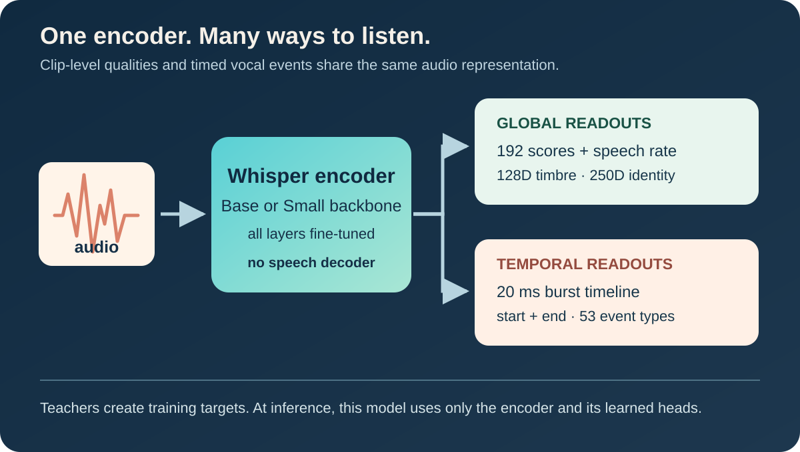
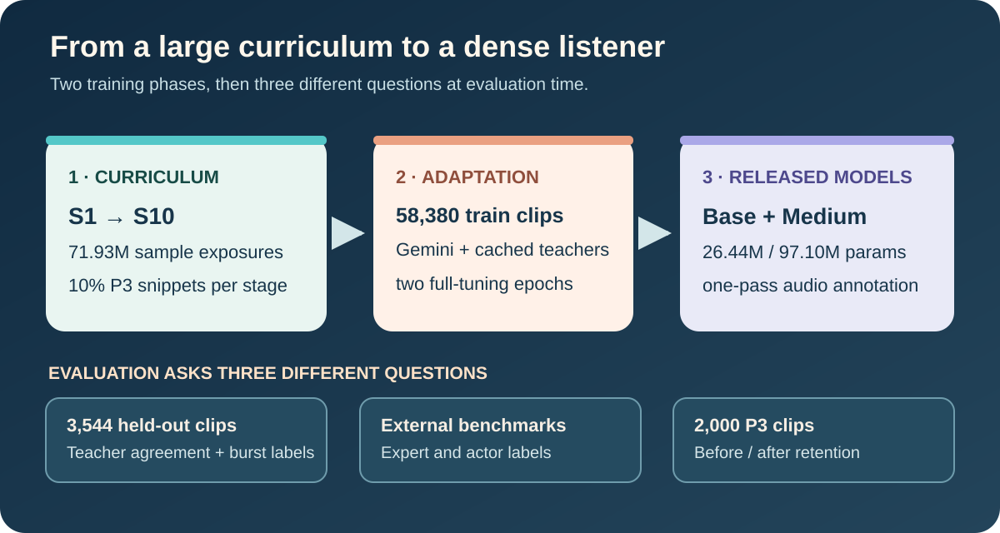
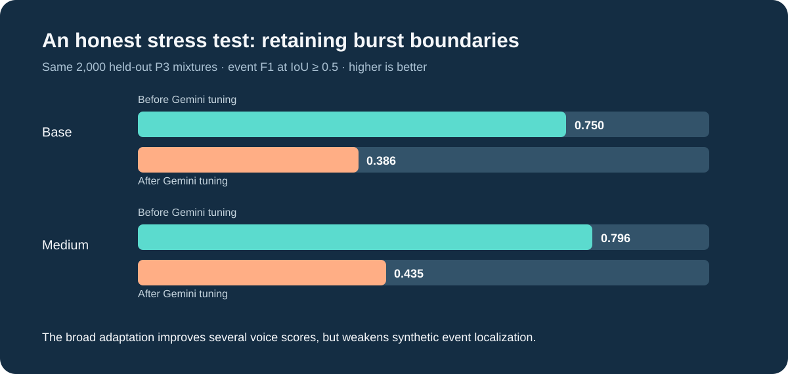

An open, compact audio model that listens for the many things words alone leave out.
“I'm fine.” The words are simple. The voice might be relieved, exhausted, amused, breathless, or holding back tears. A transcript records the sentence; it rarely records the moment.
In “Do They See What We See?”, we asked how machines might learn richer, more transparent ways to understand human expression. Humaneness Ears carries that question into audio. We want an open tool that can describe how somebody sounds, where a laugh or sob begins and ends, what the recording quality is like, and which properties of the speaker's voice remain stable across a changing performance.
The result is a pair of encoder-only models, Base and Medium, released with weights and inference code, an interactive listening atlas, and this paper draft and evidence bundle. These are research tools, not arbiters of somebody's inner state. Their scores are estimates of audible cues, and many training labels come from other models rather than people.
One recording, many useful questions
Most audio pipelines answer one question at a time. Speech recognition recovers words. An emotion model predicts a small set of feelings. A quality model estimates how clean the recording sounds. A burst detector marks laughter, crying, gasps and other non-lexical events. Large collections often need all of these views, consistently and at scale.
Humaneness Ears combines them in a shared acoustic encoder and separate task heads:
| Output | What it can help describe | Read the number as |
|---|---|---|
| 40 EmoNet-style scores | Fine-grained vocal emotion and expression | A predicted audible cue, not a diagnosis |
| 57 VoiceNet-style dimensions | Vocal style, delivery, prosody and timbre | A model-estimated attribute on its own scale |
| Genuineness, vocal-burst blend and quality families | Aspects of performance, content enjoyment and recording quality, including AudioBox and DNSMOS targets | Agreement with annotation models, unless independently tested against people |
| Characters per second and burst count | Speech rate and amount of non-speech vocal activity | Clip-level estimates |
| Orange timbre and identity vectors | 128-dimensional timbre and 250-dimensional speaker representation | Embedding predictions for similarity search |
| 20 ms burst timeline and 53 event classes | Where a vocal event happens and what type it might be | Candidate intervals and class probabilities |
The 192 scalar slots include the burst count; characters per second is an additional head. Labels are incomplete across sources, so each loss applies only where its target is available. EmoNet, VoiceNet, AudioBox Aesthetics, DNSMOS, and the Orange speaker models provide much of the vocabulary and supervision behind these outputs. Their published taxonomies and methods remain the source of truth for interpreting individual dimensions.

The architecture, simplified. A shared Whisper audio encoder feeds clip-level predictions and a separate time-resolved vocal-event branch. There is no Whisper decoder or speech-transcription head in the released models.
Base begins with the Whisper Base audio encoder; Medium begins with the Whisper Small audio encoder. The release names describe the size of our students: Medium is not OpenAI's Whisper Medium. The complete trainable models contain about 26.4 million and 97.1 million parameters, respectively. Their heads combine information pooled from multiple encoder layers with the final time sequence, so a task can draw on both broad acoustic context and local evidence.
How we taught the models to listen
The first phase was a large continuous curriculum through ten stages of the LAION speech scaling ladder. Each stage was traversed once under a single cosine learning-rate schedule. Ten percent of each stage's exposures were drawn from a frozen pool of synthetic mixtures designed to teach vocal-burst boundaries. Across stages there were 71.93 million training exposures. Because the ladder stages overlap and synthetic clips recur, this is emphatically not a count of unique recordings.
The next phase adapted selected intermediate checkpoints—Base from S4 and the Whisper Small-backed model from S3—for two epochs on 58,380 training clips from a 65,163-clip, 194-hour valid annotation pool. These clips combine Gemini-produced descriptions, scores and event times with cached specialist-model targets in audio-linked sidecars. The held-out split has 3,544 clips. This is model distillation and synthetic supervision, not 65,163 independent human judgments.

Two training phases, followed by several different tests. We keep human-label benchmarks separate from comparisons to the teachers that created many of the targets.
The full training used 16 GH200 GPUs across four nodes for the curriculum; the later adaptation used four GH200 GPUs. Encoder learning rates were lower than task-head rates, and all encoder layers were updated. The technical manuscript records optimizer settings, split rules, target transforms and model sources.
What the evaluations say
The strongest evidence for a voice understanding model comes from held-out human labels. These benchmarks ask different questions and must keep their original protocols visible.
| Human-label evaluation | Base | Medium | How to interpret it |
|---|---|---|---|
| EmoNet-Voice, mapped intensity pairs · Pearson r | 0.434 | 0.451 | 12,000 mapped pairs; two queried labels were unavailable and some audio exceeds our 30 s input window |
| VoiceNet-Emo · mean per-prompt Spearman ρ | 0.429 | 0.428 | 7,986 pairs in our local ≥2-rater snapshot |
| VoiceNet-Ext · mean per-prompt Spearman ρ | 0.157 | 0.150 | 13,917 pairs in our local snapshot; expert agreement is difficult on these fine-grained dimensions |
| CREMA-D · actor-disjoint accuracy | 63.10% | 64.23% | Five-fold speaker-disjoint transfer with a trained small classifier on the 192 predicted scores |
| RAVDESS · actor-disjoint accuracy | 65.97% | 66.39% | The same supervised transfer protocol |
The VoiceNet paper reports mean per-prompt ρ 0.372 for VoiceCLAP-Large on Emo and 0.148 on Ext. Those numbers offer context, not a head-to-head win: the VoiceNet model uses voice–text cosine scores and its Ext sample count differs from ours. The EmoNet-Voice paper likewise evaluates different model interfaces and subsets. On CREMA-D and RAVDESS, our table includes benchmark-label training of an adapter; a fixed zero-shot crosswalk scores far lower (18.9–19.7% and 24.7–24.8%). The adapter is part of the protocol, not a hidden property of the raw student output.
A separate test compares the students with the models that supplied training targets. It measures distillation agreement, not independent human validity:
| Held-out Gemini test · 3,544 clips | Base | Medium | Better direction |
|---|---|---|---|
| EmoNet-family normalized MAE | 0.587 | 0.561 | Lower |
| VoiceNet-family normalized MAE | 0.497 | 0.481 | Lower |
| AudioBox-family normalized MAE | 0.188 | 0.174 | Lower |
| DNSMOS-family normalized MAE | 0.205 | 0.198 | Lower |
| Orange timbre cosine similarity | 0.904 | 0.922 | Higher |
| Orange identity cosine similarity | 0.854 | 0.874 | Higher |
| Vocal-event frame F1 | 0.693 | 0.689 | Higher |
| Vocal-event F1 · interval IoU ≥ 0.5 | 0.194 | 0.195 | Higher |
The embedding cosine figures are based on 1,718 valid single-speaker clips. The interval F1 is modest: the event head has high recall but low precision. A nice-looking timeline should therefore be treated as a proposal for review, especially when precise boundaries matter.
We also checked whether the Gemini phase preserved a skill the earlier curriculum had taught. On the same 2,000 held-out synthetic P3 mixtures, Base event F1 dropped from 0.750 to 0.386; Medium dropped from 0.796 to 0.435. This is a genuine trade-off, not a result to tuck away. Future runs should replay boundary-rich mixtures during adaptation and verify them on manually marked real events.

Listen, inspect, improve
A correlation coefficient is useful; listening to the clips behind it is indispensable. The Humaneness Ears listening atlas lets readers hear examples, inspect score rankings, compare timbre and identity neighbors, and examine proposed vocal-burst intervals. The independent benchmark report and model repository expose more of the evaluation and implementation. The Gemini annotation dataset explains its own source and annotation process.
We are sharing a short, Overleaf-ready paper draft with the figures, BibTeX, code pointers, target schema and an evidence ledger. It identifies open questions: we still need controlled single-task ablations, stronger leakage checks, uncertainty intervals, and a manually checked real-world vocal-event benchmark. A joint model is practical; this study does not yet prove that joint training alone caused every gain.
Our broader BUD-E ambition is open, reproducible voice technology that can perceive and eventually produce communication with more nuance. Richer annotations could help researchers find diverse voice-acting examples, audit generative systems, and train open speech models with less reliance on opaque pipelines. We are also working toward better voice generation and, eventually, responsive real-time interaction. That future needs transparent datasets, careful evaluation and room for people to disagree about what a voice conveys.
A voice is never just the words. Our aim is to make the rest of the signal easier to study—openly, reproducibly, and with the humility it deserves.
Further reading: EmoNet-Voice · VoiceNet and Emolia benchmarks · EmoNet-Face · Whisper · model release · paper draft.